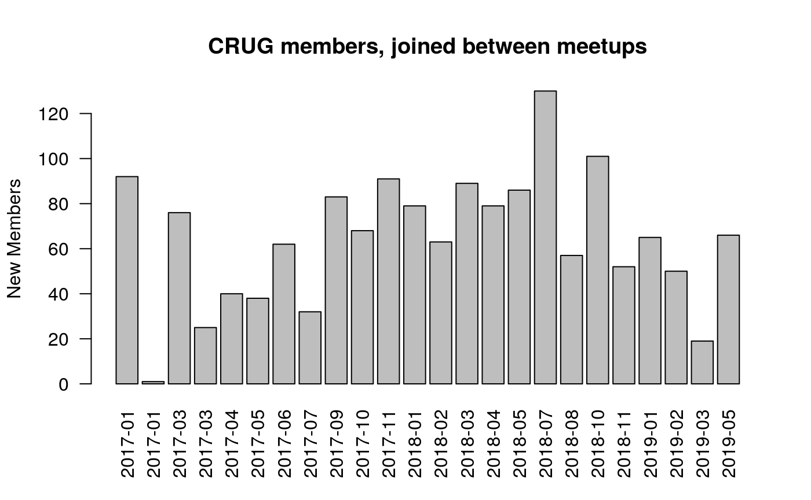
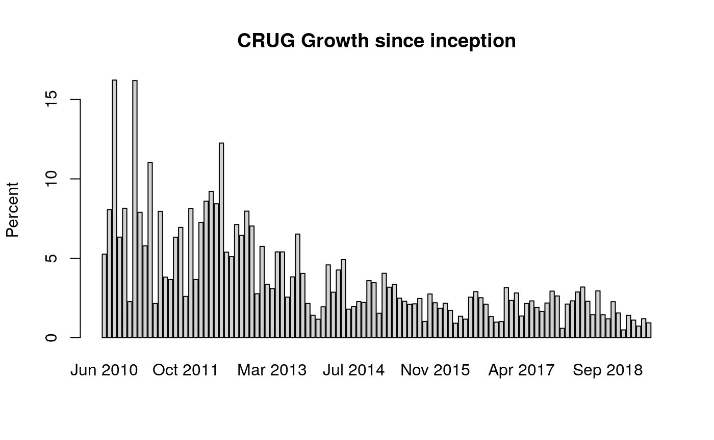
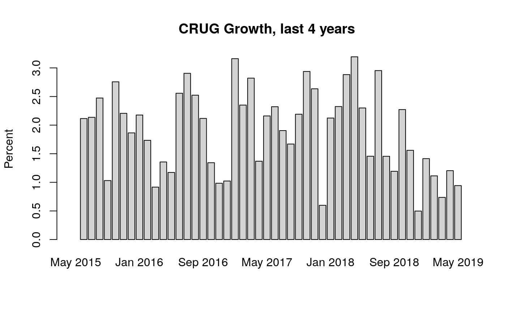

Introduction-RUGtools.RmdThis is a traditional ioslides R Markdown template, but modified to contain default content routinely used when introducing Chicago R user group meetups. Slides are useful because they look good and you won’t forget to do important things like thanking the sponsors! Slides can be accessed from within R Studio using the New R Markdown dialog menu, and then selecting From Template. One can also use the draft function, exemplified below.
In Chicago, we think a lot about Pizza. And if one is involved in the local meetup culture, this is doubly so. At a recent meetup group that wasn’t ours, I counted nearly 6 large pizzas left over. Struck by an overwhelming sorrow, I vowed the Chicago R User Group shall never partake in such a tragic waste of resources. With a few data points, one can use the pizza_estimate function to arrive at a more efficient order.
pizzas <- pizza_estimate(registered = 140, pizza_diameter = 18, attend_rate = 0.60,
serving = 2, style = "thin")
kable(pizzas)| registered | est_attend | eaters_per_pizza | style | pizza_estimate |
|---|---|---|---|---|
| 140 | 84 | 5.342811 | thin | 16 |
Channeling our ever-curious pizza scientist, it turns out the Chicago “party cut” (thin-crust cut into small squares) inherits a few very attractive properties when dividing n pizzas among p guests. Small square pieces allow guests to better estimate pizza consumption, thus decreasing the integer-programming problem exacerbated by large triangular slices. Reducing wasted pizza is not only virtuous, it demonstrates great stewardship of sponsor resources bestowed upon thee.
Chicago R User Group data is included and downloaded from meetup.com/ChicagoRUG. Personally identifiable information has been removed, data formatted and ready for analysis.
Load the member list data. How many members do we have?
## [1] 3606Lets plot the cumulative membership.
plot(y = member_list$Member.ID, x = member_list$Joined.Group.on, type = "l",
lwd = 2, col = "blue", frame = FALSE, main = "Chicago R User Group members",
ylab = "Members", xlab = "", ylim = c(0, 4000), xlim = c(min(member_list$Joined.Group.on),
as.Date("2020-01-01")))How many members joined since January 2017?
## [1] 1554What percentage of the Chicago R User Group joined since January 2017?
Percentage <- 100 * NROW(subset(member_list, Joined.Group.on > "2017-01-01")) / NROW(member_list)
round(Percentage, 2)## [1] 43.09First, get a unique ordered list of Meetup dates
Meetup_dates <- sort(unique(member_list$Last.Attended))
new_members <- subset(member_list, Joined.Group.on > Meetup_dates[NROW(Meetup_dates)])Then count the number of new members joined between the most recent meetup and the one prior to that.
new_members2 <- subset(member_list, Joined.Group.on <= Meetup_dates[NROW(Meetup_dates)] &
Joined.Group.on > Meetup_dates[NROW(Meetup_dates)-1])
NROW(new_members2)## [1] 67In danger of repeating the above analysis several times over, we created a function new_mem_counter to count the number of new members joined between meetups for all meetups in the data set.
new_members <- new_mem_counter(member_list)
# drop the last observation, as incomplete data leading up to the coming meetup.
new_members <- new_members[-NROW(new_members),]
kable(head(new_members), align = 'l')| Date | New |
|---|---|
| 2010-05-27 | 0 |
| 2010-08-26 | 20 |
| 2010-10-20 | 10 |
| 2010-12-16 | 15 |
| 2011-03-23 | 34 |
| 2011-06-02 | 17 |
| Date | New | |
|---|---|---|
| 65 | 2018-10-16 | 101 |
| 66 | 2018-11-14 | 52 |
| 67 | 2019-01-23 | 65 |
| 68 | 2019-02-27 | 50 |
| 69 | 2019-03-20 | 19 |
| 70 | 2019-05-15 | 66 |
Which gap between meetups had the most new members?
max_new_members <- new_members[new_members$New==max(new_members$New),]
kable(max_new_members, align = 'l')| Date | New | |
|---|---|---|
| 37 | 2016-06-05 | 157 |
Note the previous meetup was 6 months prior, so likely this was not due to the topic covered.
What is the average number of new members joined between meetups?
## [1] 49.54286Plot the new members data.
# Create Date Range Index
Date_Index <- as.numeric(row.names(new_members[new_members$Date > "2010-01-01" & new_members$Date <= Sys.Date(),]))
# Create x-axis labels, using year-month date format
x_labels <- format(new_members$Date[Date_Index], "%Y-%m")
# Plot
barplot(new_members$New[Date_Index], names.arg = x_labels, main = "CRUG members, joined between meetups",
ylab = "New Members", xlab = "")Plot the new members data since 2017.
# Create Date Range Index
Date_Index <- as.numeric(row.names(new_members[new_members$Date > "2017-01-01" & new_members$Date <= Sys.Date(),]))
x_labels <- format(new_members$Date[Date_Index], "%Y-%m")
# Plot
barplot(new_members$New[Date_Index], names.arg = x_labels, las=2, main = "CRUG members, joined between meetups",
ylab = "New Members", xlab = "")
What is the average number of new members joined between meetups since 2017?
## [1] 64.33333Lets subtract the mean and plot.
Load and use the xts package.
library(xts)
members_xts <- xts(x = member_list$Member.ID, order.by = member_list$Joined.Group.on)
plot(members_xts, col = "blue", grid.col = "white", main = "Chicago R User Group members by join date")members_monthly <- to.monthly(members_xts, OHLC = FALSE)
barplot(diff(members_monthly), col = "lightgrey", main = "Chicago R User Group, new members by month")
Omit the first two months growth outliers.

Let’s view the last 3 years.
As one of the largest and oldest R user groups in existence, the Chicago R User Group has matured into a comfortable period of value. Growth rates are lower by percentage, but the group continues to serve a steady group of new useRs.